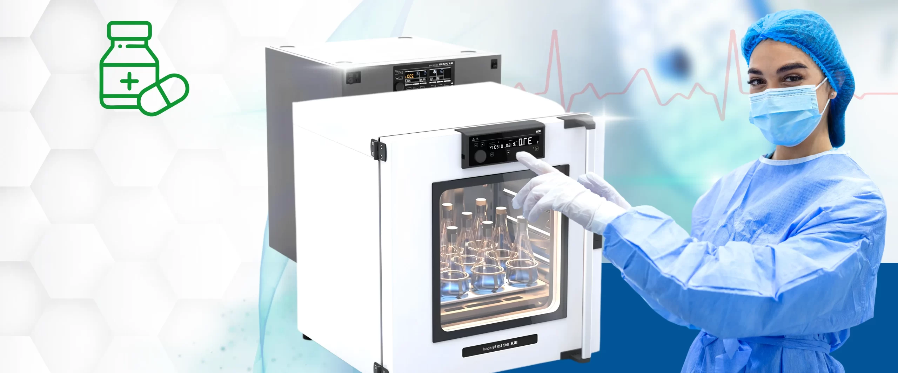

Preparación, análisis y control científico.
Autoclaves, microscopios, balanzas, centrífugas, incubadoras y agitadores.
Explorar líneaOpción 1 / recomendada
El usuario puede buscar por producto, entrar por línea de negocio o pedir asesoría. Es la ruta más sólida para unificar ambas webs sin saturar la primera pantalla.

Autoclaves, microscopios, balanzas, centrífugas, incubadoras y agitadores.
Explorar líneaSonómetros, anemómetros, termómetros, multímetros, sensores e higrómetros.
Ver instrumentosCabinas, mesas, vitrinas, refrigeración, seguridad y soporte de laboratorio.
Ver solucionesPipetas, vidriería, guantes, reactivos, medios de cultivo y repuestos.
Comprar insumosServicios que venden confianza
Rediseñar la home principal sin rehacer todo el catálogo.
Media. Requiere mapear líneas principales y categorías destacadas.
Primera fase del rediseño.